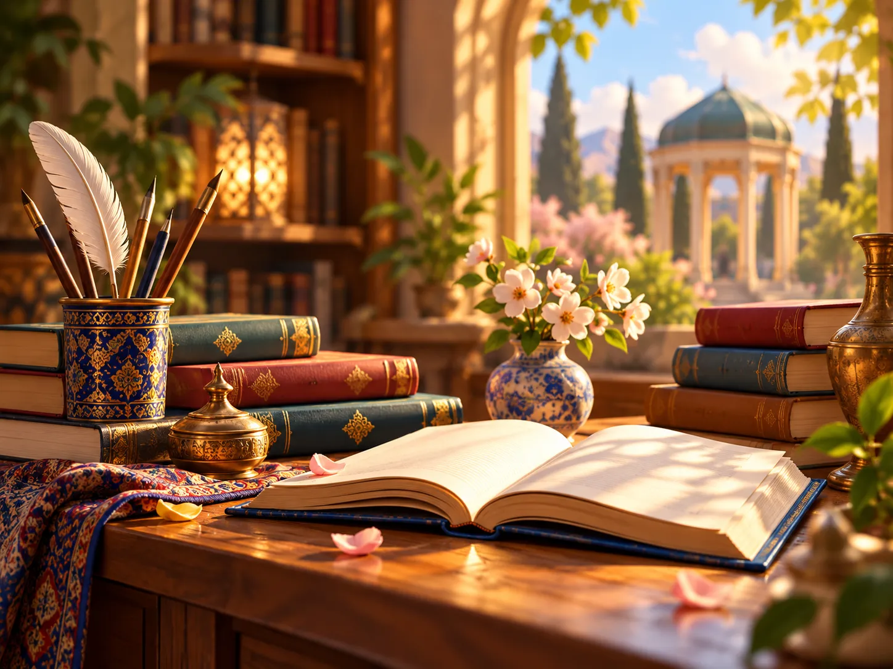
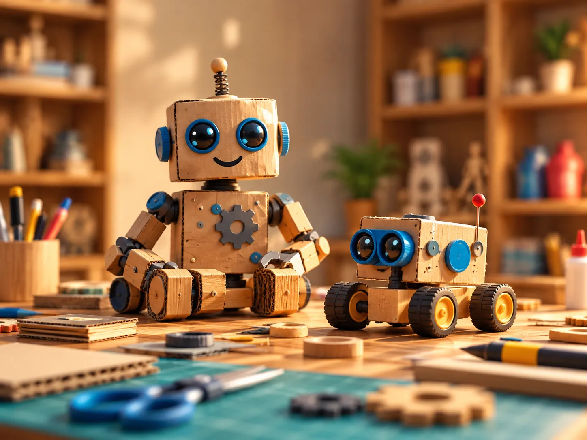
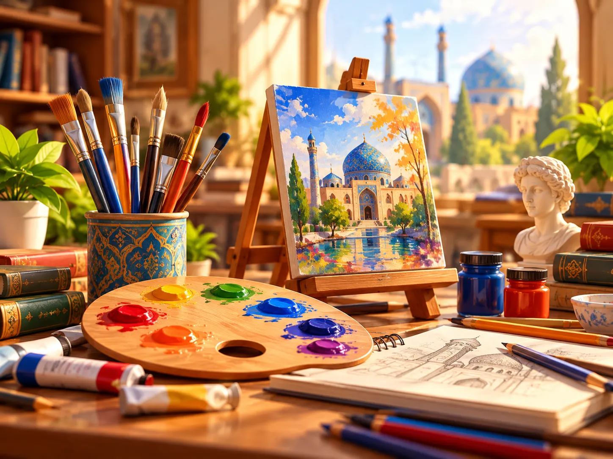
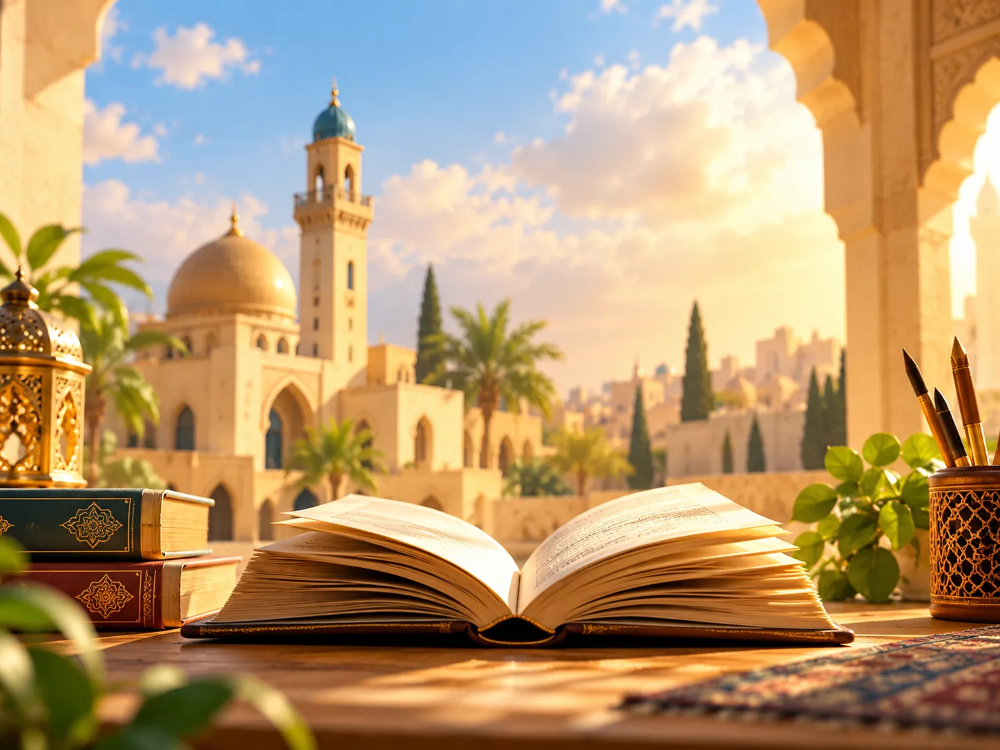
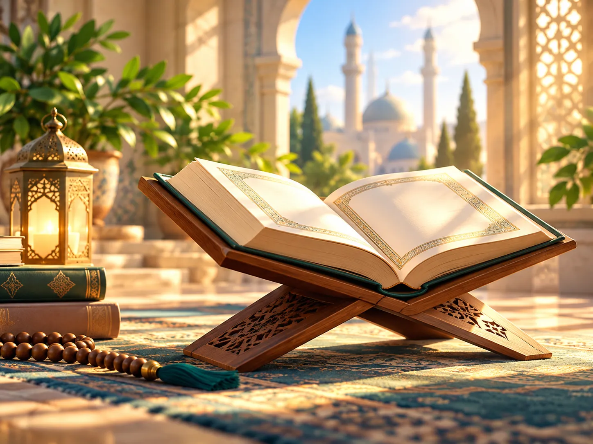

💡 راهنمای انتخاب مسیر دورههای خوارزمی
مسیرت را پیدا کن!
با مطالعه توضیحات محورهای خوارزمی، آنها را دقیق مقایسه کن و سپس با در نظر گرفتن علاقهها و توانمندیهایت، مسیر مناسب خود را انتخاب کن.
این انتخاب میتواند قدمی مهم در شکلگیری آینده روشنتتر باشد.
چگونه انتخاب کنم؟
در سه گام ساده، مسیر مناسب خود را پیدا کنید.
آنها را با توجه به علاقهها و توانمندیهایت مقایسه کن.
مناسبترین مسیر را انتخاب کن و در نظرسنجی ثبت کن.
معرفی جشنواره نوجوان خوارزمی ۱۴۰۶–۱۴۰۵
جشنواره نوجوان خوارزمی یکی از معتبرترین برنامههای ملی وزارت آموزش و پرورش است که با هدف شناسایی، پرورش و نمایش توانمندیهای علمی، پژوهشی، مهارتی، فنی، هنری و کارآفرینانه دانشآموزان برگزار میشود. دوازدهمین دوره این جشنواره در سال تحصیلی ۱۴۰۶–۱۴۰۵ با محورهای کاملاً بهروز، ساختار داوری یکپارچه، و فرایند اجرایی استاندارد در سطح مدرسه، منطقه، استان و کشور اجرا میگردد.
این جشنواره با رویکرد پرورش مهارتهای کلیدی مانند تفکر انتقادی، خلاقیت، پژوهشگری، روحیه علمی، ارائه شفاهی و توانایی کارآفرینی طراحی شده است. دانشآموزان پایههای هفتم تا نهم در دوره اول متوسطه و در برخی محورهای مهارتی پایههای دهم تا دوازدهم نیز امکان شرکت دارند؛ با این حال تمرکز اصلی جشنواره بر گروه سنی نوجوان (متوسطه اول) است.
محورهای خوارزمی
محورهای جشنواره نوجوان خوارزمی
در دورههای خوارزمی، ۱۴ محور متنوع وجود دارد. با مطالعهی هر محور، با دنیایی از فرصتها و تجربههای جدید آشنا شوید.
پژوهش
پرسشگری، جستوجو و حل مسئله
ریاضی
تفکر منطقی، الگوها و حل مسئله
برنامهنویسی و هوش مصنوعی
کدنویسی، الگوریتم و فناوری آینده
فعالیتهای آزمایشگاهی
مشاهده، آزمایش و کشف علمی
زبان انگلیسی
ارتباط، خواندن، نوشتن و صحبت کردن

زبان و ادبیات فارسی
خوانش، نوشتن و آفرینش ادبی
بازارچه کسبوکار دانشآموزی
ایده، محصول، فروش و کارآفرینی

دستسازه
ساختن، طراحی و تبدیل ایده به اثر
سلامت و تربیت بدنی
تندرستی، تحرک و ورزش

فرهنگ و هنر
خلاقیت، شناخت فرهنگ و زیبایی
مناظره مطالعات اجتماعی
گفتوگو، تحلیل و استدلال اجتماعی

زبان عربی
فهم زبان، مهارت زبانی و متنخوانی

قرآن و معارف اسلامی
فهم مفاهیم، اخلاق و کاربرد در زندگی
بازیهای مهارتی و توسعه فردی
تمرکز، تصمیمگیری، همکاری و رشد فردی
شرایط شرکت و مراحل جشنواره
شرایط شرکت در جشنواره ۱۴۰۶–۱۴۰۵
- دانشآموزان پایه هفتم، هشتم و نهم مجاز به شرکت هستند.
- هر دانشآموز میتواند حداکثر در یک محور ثبتنام کند.
- اثر باید کاملاً شخصی و غیرکپی باشد.
- تحویل فایلها در زمان تعیینشده مدرسه الزامی است.
- حضور در جلسه دفاع حضوری و مصاحبه علمی ضروری است.
مراحل کامل ثبتنام جشنواره نوجوان خوارزمی
- مرحله اول: ثبتنام مدرسهدانشآموز به معاون پرورشی یا دبیر مسئول جشنواره مراجعه میکند و فرم اولیه ثبتنام را تکمیل میکند.
- مرحله دوم: تهیه و تکمیل اثراثر باید طبق شیوهنامه همان محور آماده شده و فرمهای شماره ۱ و ۲ تکمیل شوند. فایلها معمولاً باید به صورت PDF تحویل داده شوند.
- مرحله سوم: داوری مدرسهآثار توسط شورای تخصصی مدرسه ارزیابی شده و برگزیدگان به مرحله منطقه معرفی میشوند.
- مرحله چهارم: مرحله منطقهارائه حضوری و مصاحبه علمی انجام میشود و داوران طبق فرمهای رسمی امتیازدهی میکنند.
- مرحله پنجم: استانمنتخبین منطقه به داوری تخصصی استانی راه پیدا میکنند؛ این مرحله معمولاً رقابتیترین بخش است.
- مرحله نهایی: کشوریبرگزیدگان استانها به مرحله کشوری معرفی میشوند و گواهی معتبر ملی دریافت میکنند.
زمانبندی جشنواره خوارزمی ۱۴۰۶–۱۴۰۵
- ثبتنام مدرسهآبان و آذر ۱۴۰۵
- داوری مدرسهدی ۱۴۰۵
- مرحله منطقهبهمن ۱۴۰۵
- مرحله استاناسفند ۱۴۰۵
- مرحله کشوریاردیبهشت و خرداد ۱۴۰۶
نکات کلیدی برای موفقیت در جشنواره
- انتخاب محوری که علاقه واقعی به آن دارید
- تهیه گزارش استاندارد و دقیق
- تسلط کامل بر موضوع و تمرین ارائه
- استفاده از منابع معتبر و علمی
- رعایت کامل چارچوب شیوهنامه
آماده انتخاب هستی؟
اکنون که با محورهای خوارزمی آشنا شدی، نوبت توست.
فرصت را از دست نده، مسیر مورد علاقهات را ثبت کن.